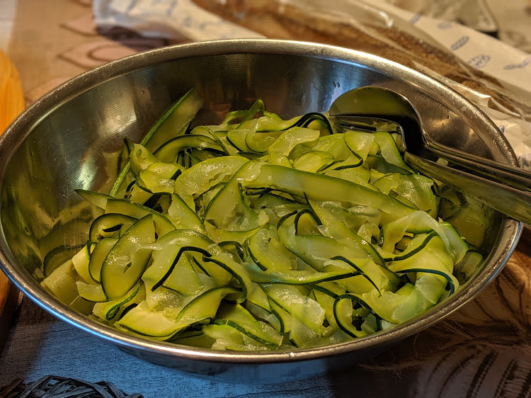

Tagliatelles de courgette

Ici, avant de rajouter la sauce à l'ail.
Pour 4 personnes :
- 500g de petites courgettes
- Une tête d'ail (oui, ça fait beaucoup)
- Le jus d'un demi-citron
- 8 brins d'aneth (au pire si t'en as pas c'est pas super grave)
- 15cl de crème fraîche liquide
- Sel, poivre
- Séparer les gousses de la tête d'ail, les peler, les couper en deux et enlever le germe si germe il y a.
- Mettre l'ail 5 minutes dans une casserole d'eau en ébullition
- Faire chauffer la crème liquide dans une petite casserole, ajouter les gousses d'ail, saler, poivrer, laisser mijoter 10 minutes à couvert et très doucement.
- Dès que les gousses d'ail sont bien tendres, passer au mixeur la préparation, ajuster l'assaisonnement, et laisser le tout sur feu très doux pour ne pas que ça refroidisse.
- Rincer, éponger et couper en petits bouts l'aneth.
- Laver et essuyer les courgettes. Les couper en deux dans le sens de la longueur, puis les couper en fines lamelles (avec un économe, par exemple).
- Mettre de l'eau au fond d'une cocotte-minute, la porter à ébullition, et faire cuire les courgettes à la vapeur pendant deux minutes.
- Mettre les courgettes dans un plat, ajouter le jus de citron, la sauce à l'ail tiède, remuer doucement et servir tel quel.
Variante : Mélanger tout ça avec 200g de vraies tagliatelles, et paf ça fait un plat chaud et non plus une entrée/accompagnement.
Retour à la liste des recettes